Журнал нивелирования
III и IV класс по ГКИНП (ГНТА)-03-010-02 или свои допуски. Контроль на станции сразу при вводе, прямой и обратный ход, секции, невязка и ведомость уравнивания.
Для геодезистов и изыскателей
Nivel ведёт журнал нивелирования и полигонометрии с контролем допусков прямо на станции, уравнивает ходы, строит схемы и чертежи, работает с картой и GNSS. Дома журнал открывается в браузере — без установки и регистрации.
Всё, что обычно лежит в тетради, калькуляторе и паре программ на компьютере, — в одном приложении.
III и IV класс по ГКИНП (ГНТА)-03-010-02 или свои допуски. Контроль на станции сразу при вводе, прямой и обратный ход, секции, невязка и ведомость уравнивания.
Приёмы КЛ/КП, 2C и расхождение полуприёмов, угловая и линейная невязки, параметрическое уравнивание по МНК и схема хода.
Точки, линии и полигоны, запись трека, фототочки, статика по серии фиксов, навигация к точке и по маршруту, растровые подложки с привязкой.
Схема нивелирного хода и профиль из журнала в одно касание, свой редактор с привязками и размерами, экспорт в DXF, PDF и SVG.
ПГЗ и ОГЗ, засечки с контролем, вынос в натуру, недоступная точка по наклонам вехи, калькулятор углов и масштабов.
WGS-84, ПЗ-90.11, ГСК-2011, СК-42 и СК-95 по ГОСТ, зоны Гаусса — Крюгера, UTM и местные системы (МСК).
Главное условие нивелира, круглый уровень, сетка нитей, разность пяток реек, коллимационная ошибка и место нуля — с расчётом и историей.
Журналы отправляются файлом .nivel, выгружаются в Excel и TXT. Резервная копия всех данных и автокопия по расписанию.
Тёмная тема по умолчанию; есть светлая и строгие темы.
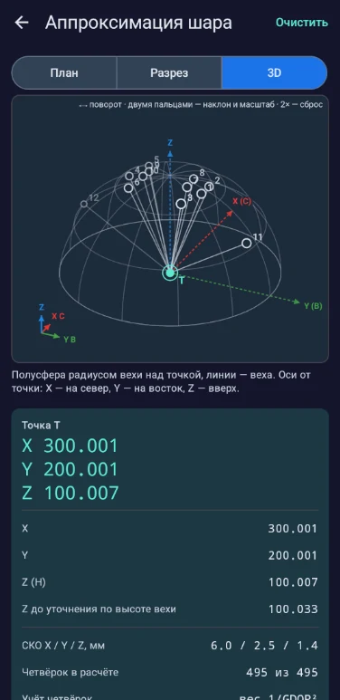
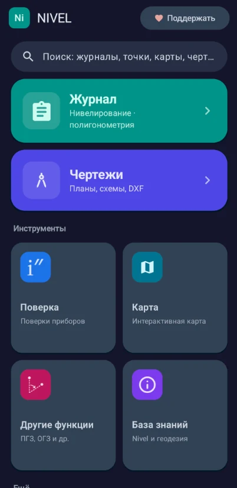
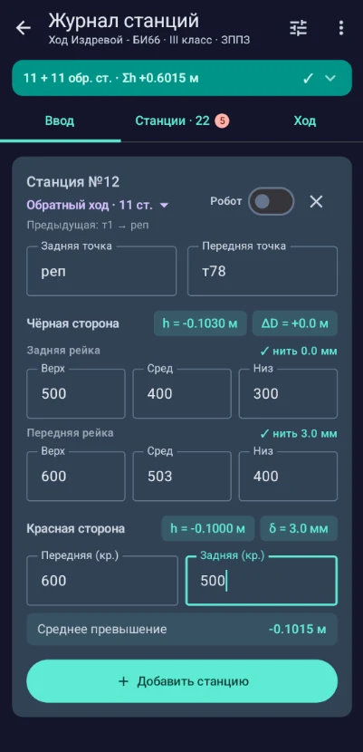
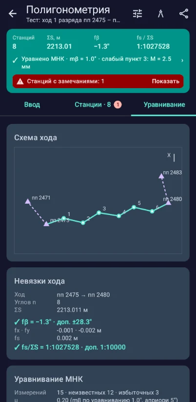
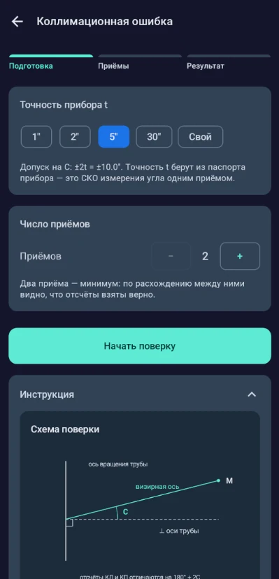
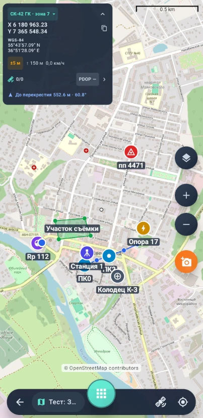
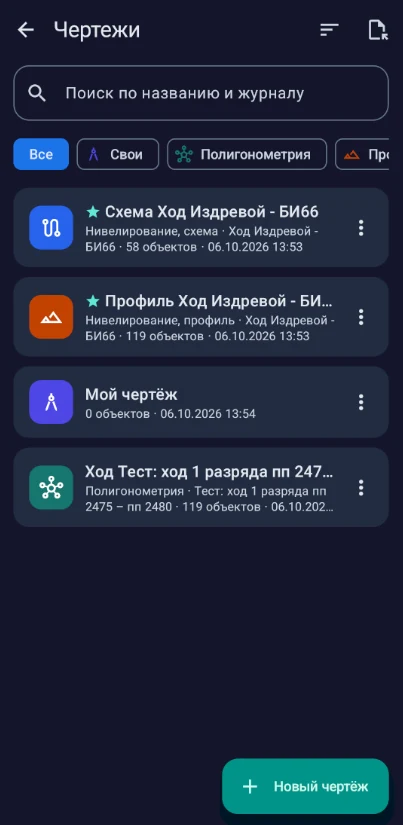
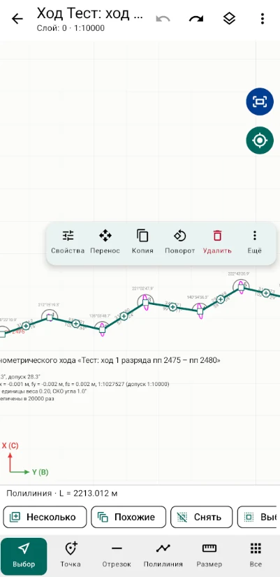
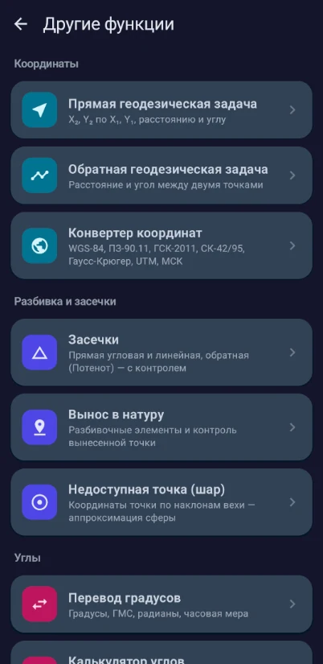
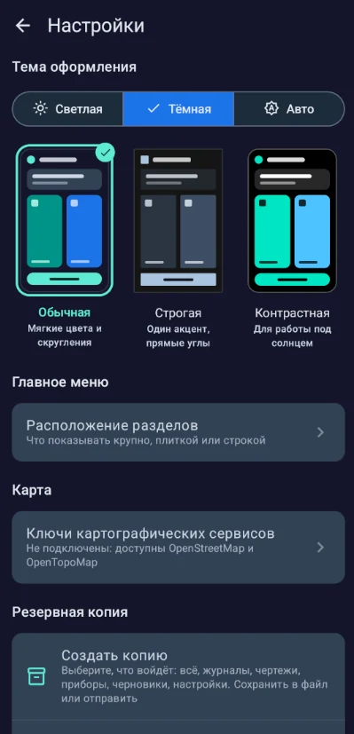
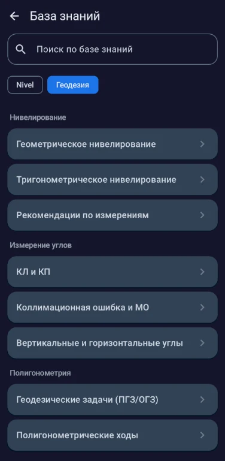
Онлайн-версия
Откройте файл .nivel, отправленный из приложения, и продолжайте работу в браузере: таблицы станций, ведомость уравнивания, схема хода и профиль, расчёты и поверки. Те же формулы, что в приложении, — код общий.
Android
Версия 1.5 · Android 7.0 и новее. Приложение бесплатное и работает без интернета; интернет нужен только для подложек карты.
О разработчике
Студент Сибирского государственного университета геосистем и технологий. Nivel начался как личный проект: я хотел иметь под рукой в поле и на практике журнал нивелирования, который сам следит за допусками и считает невязки. Постепенно приложение выросло в полноценный инструмент — с полигонометрией, картой, чертежами и онлайн-версией.
Nivel делаю в свободное время, поэтому каждое замечание и каждая идея — по-настоящему важны: пишите, что неудобно или чего не хватает.
Авторы программы: Машинец В. А., Терещенко В. Е. · Свидетельство о регистрации программы для ЭВМ № 2026666579 от 02.06.2026
Nivel бесплатный и без рекламы. Если он экономит вам время, можно поблагодарить разработчика — это помогает развивать приложение дальше.
Нашли ошибку, не хватает функции или есть идея? Напишите — каждое сообщение читается.